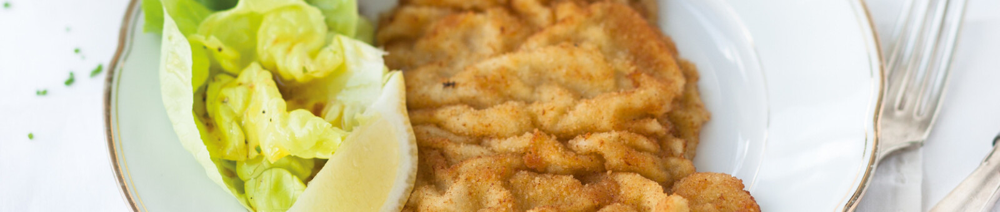

Wiener Schnitzel

Ingredientes
- 600 gramos de filete de ternera
- Sal
- Harina
- 4 huevos
- Pan rallado
- Aceite para freir
- Gajos de limón amarillo
Preparación
- Aplanar los filetes de ternera
- Sazonar los filetes con sal, pasar por harina, huevo batido y el pan rallado
- Freir los filetes en aceite a 180°C, dorando ambos lados, quitar el exceso de aceite
- Servir con los gajos del limón, acompañar con Petersillkartoffeln